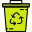
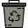
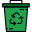
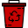
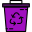

<div class="view view-main view-init">
    <div class="page">
        <div class="page-content">
            <div class="row" style="background-color: rgb(9, 65, 37)">
                <a href="#" class="link back col-md-2">
                    <div id="menu" class="col-md-2">
                        
                    </div>
                </a>
                <div id="titulo" class="col-md-8">
                    
                </div>
                <div id="menu" class="col-md-2">
                </div>
            </div>
            <div style="margin: 10px">
                <p style="text-align: justify;">Los contenedores de reciclaje tienen diferentes colores, y esto es porque cada uno tiene por objetivo recolectar un tipo de residuo en particular.</p>
                
                <p style="text-align: justify;"><strong>Color azul reciclaje (papel y cartón):</strong> En este contenedor se deben depositar todo tipo de papeles y cartones, que podremos encontrar en envases de cartón como cajas o envases de alimentos. Periódicos, revistas, papeles
                    de envolver o folletos publicitarios entre otros. Para un uso efectivo de este tipo de contenedores, es recomendable plegar correctamente las cajas y envases para que permitan almacenar la mayor cantidad de este tipo de residuo.</p>
                
                <p style="text-align: justify;"><strong>Color amarillo reciclaje (plásticos</strong>): En éste se deben depositar todo tipo de envases y productos fabricados con plásticos como botellas, envases de alimentación o bolsas. Las botellas y envases de alimentos deben ser
                    enjuagados y entregados secos en los contenedores.</p>
                
                <p style="text-align: justify;"><strong>Color gris claro reciclaje (Metales):</strong> En este se deben depositar las latas de conservas y de refrescos. Los cuales deben ser enjuagados y secados para su depósito en el contenedor</p>
                
                <p style="text-align: justify;"><strong>Color verde reciclaje (vidrio):</strong> En este contenedor se depositan envases de vidrio, como las botellas de bebidas alcohólicas, refresco y agua. Importante no utilizar estos contenedores verdes para cerámica o cristal.</p>
                
                <p style="text-align: justify;"><strong>Color rojo reciclaje (desechos peligrosos): </strong>Los contenedores rojos, son considerados para almacenar residuos peligrosos como baterías, pilas, aceites o medicamentos. Las condiciones sanitarias y de seguridad mínimas a
                    que se debe someter la generación, tenencia, almacenamiento, transporte, tratamiento, reúso, reciclaje, disposición final y otras formas de eliminación de los residuos peligrosos, están reguladas por el Decreto Supremo Nº 148 del Ministerio
                    de Salud.</p>
                
                <p style="text-align: justify;"><strong>Color burdeo reciclaje (aparatos eléctricos y electrónicos):</strong> En este contenedor se deben depositar Electrodomésticos voluminosos, Audio y video, Computación y Electrodomésticos pequeños.</p>
            </div>
        </div>
    </div>
</div>